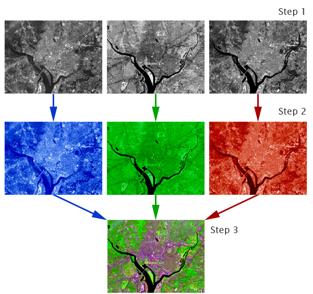
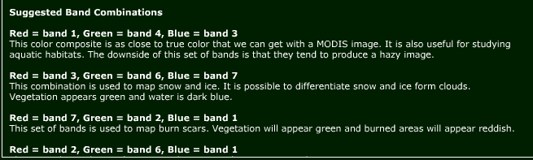
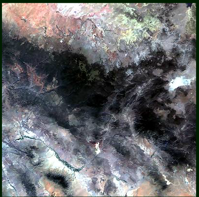
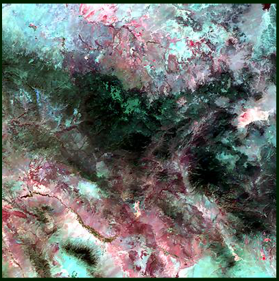
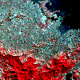
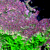

This lab focuses on the creation of various color composite images for better visual interpretation and information extraction from the satellite image. Depending on the type, sensor stores reflectance data from the object on earth surface in a number of bands (2, 4, 7 etc.,) corresponding to the data collected in that EMS. This variation in number of bands for each sensor is referred as spectral resolution. Following this lab, user will be introduced to concept of creation of false colour composite, using 3 bands (any combination) and their use for particular utility.

For visual analysis, color composites make fullest use of the capabilities of the human eye. Depending upon the graphics system in use, composite generation ranges from simply selecting the bands to use, to more involved procedures of band combination. Following figure shows several composites made with different band combinations from the same set of TM images.
(Source: http://www.mtholyoke.edu/courses/tmillett/course/geog205/files/remote_sensing.pdf)
Satellites acquire images in black and white, so how is it possible to create the beautiful color images that we see. The images created using different bands (or wavelengths) have different contrast (light and dark areas). Computers make it possible to assign "false color" to these black and white images. The three primary colors of light are red, green, and blue. Computer screens can display an image in three different bands at a time, by using a different primary color for each band. When we combine these three images we get a "false color image".
(Source: http://landsat.gsfc.nasa.gov/education/compositor/color_comp.html )

Different Band combination of Modis image can also be seen at http://biodiversityinformatics.amnh.org/tool.php?content_id=141
| 143 | 367 | 721 |
|  |  |  |
Color Composites in Landsat TM Data
True-Color Composite (3, 2, 1)
|
True-color composite images approximate the range of vision for the human eye, and hence these images appear to be close to what we would expect to see in a normal photograph. True-color images tend to be low in contrast and somewhat hazy in appearance. This is because blue light is more susceptible than other bandwidths to scattering by the atmosphere. Broad-based analysis of underwater features and land cover are representative applications for true-color composites. |

|
Near Infrared Composite (4,3,2)
|
Adding a near infrared (NIR) band and dropping the visible blue band creates a near infrared composite image. Vegetation in the NIR band is highly reflective due to chlorophyll, and an NIR composite vividly shows vegetation in various shades of red. Water appears dark, almost black, due to the absorption of energy in the visible red and NIR bands. |
 |
Shortwave Infrared Composite (7, 4, 3 or 7, 4, 2)
|
A shortwave infrared composite image is one that contains at least one shortwave infrared (SWIR) band. Reflectance in the SWIR region is due primarily to moisture content. SWIR bands are especially suited for camouflage detection, change detection, disturbed soils, soil type, and vegetation stress. |
 |
(Source: http://www.math.montana.edu/~nmp/materials/ess/rs/index3a.html)

In this experiment, you have to visualize the effect of various bans combinations of the LANDSAT bands.
- You are provided with the Red, Blue, Green colour region of the true color image. You have to just select the band for each color.
- While varying the bands of Red, Green and Blue regions you can notice the cthe change in the Band combination image.
- You cannot choose a same band over two colour regions


Q1.
In Landsat 432 composite image, vegetation is represented by – colour
a. Green
b. Cyan
c. Red
d. Yellow
Q2.
To study vegetation stress which composite is suitable
a. 742
b. 731
c. 432
d. 712
Q3.
Which combination of MODIS image is used to study aquatic habitats
a. 367
b. 143
c. 721
d. 432
Q4.
Snow and ice can be differentiated if we use MODIS composite of
a. 367
b. 261
c. 721
d. 143
Q5.
To map burn scar we use following composite
a. 762
b. 721
c. 741
d. 732

Please provide feedback for the experiment.